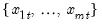
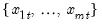
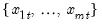

@rifirst By-Row Statistics Indices of first non-missing value in rows of group. Column indices of first non-missing value in each row of the group. Syntax: @rifirst(x) x: group Return: series For each observation corresponding to a row  in the group of series, identify the column containing the first non-missing value in the row. Examples show @rifirst(g returns a linked series of the indices corresponding to the first non-missing observations in the rows of group g. Cross-references See also @rfirst, @rlast, and @rilast.


 corresponding to a row  in the group of
corresponding to a row  in the group of  series, identify the column containing the first non-missing value in the row.
series, identify the column containing the first non-missing value in the row.